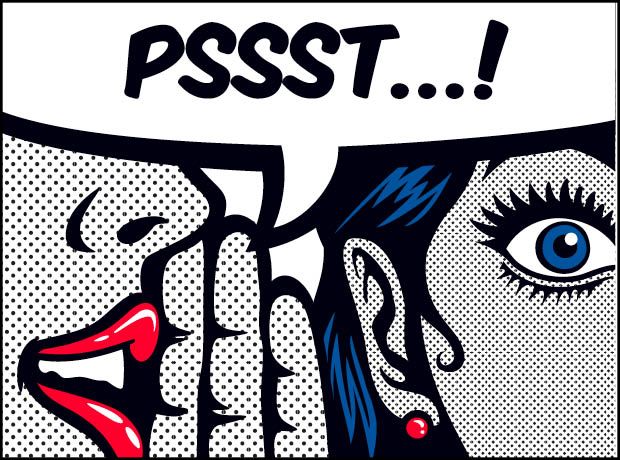
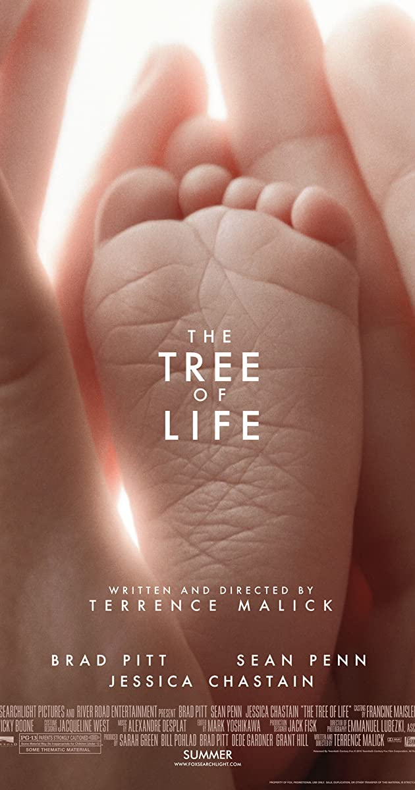
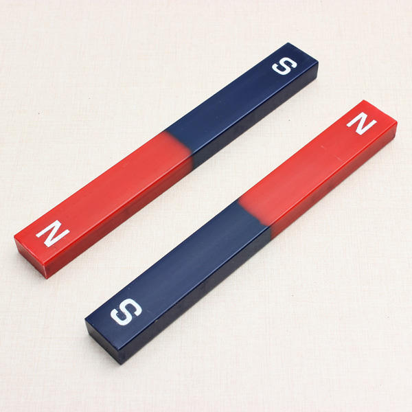

THE SECRET  REVEALED
Everything that’s coming in your life you are attracting into your life. And it’s attracted to you by virtue of images you are holding in your mind. It’s what you are thinking. Whatever is going on in your mind you are attracting to you.
Charles Hanel: The greatest and the most in fallible law upon which the entire system of creation depends.
The predominant thought or mental attitude is a magnet and it will invariably attract such conditions as correspond to its nature.
John Assaraf: You become what you think about most, but you also attract what you think about most. Thoughts has a frequency.
Here is the problem. Most people are thinking about what they don’t want, and they are wondering why it shows up again and again. It’s a “don’t want” epidemic.
You are a transmission tower, and you are transmitting that frequency with your thoughts!
If you want to change anything in your life, change your thoughts.
Bob Proctor: See yourself living in abundance and you will attract it. It works every time, with every person.
Bob Doyle: The law of attraction doesn’t care whether you perceive something to be good or bad, or whether you don’t want it or whether you do want it
You don’t press pause, you don’t press stop. It is forever in action, as your thoughts are. Creation is always happening. Something is going to manifest out of those thoughts. It creates your future life.
What you think about the most or focus on the most, is what will appear in your life.
If you are complaining, or sympathising with someone doing it, you attract more of that in your life.
Your life is in your hands, No matter where you are now, no matter what happened in your life, you can begin to consciously choose your thoughts, and can change your life. There is no such thing as hopeless situation. Every single circumstance of your life can change!
You attract to you the predominant thoughts that you are holding in your awareness(conscious/unconscious).
When you become aware, you wake up from a deep sleep.
Your life is a mirror of the dominant thoughts you think. Use your free will to choose your thoughts and change your life.
Affirmative thoughts are 100 times more powerful than negative ones. Scientifically proven. But believe that.
Thank God that there is a time delay, that all your thoughts don’t come true instantly. This serves you well to reassess, to think about what you want, and to make a new choice.
One way to master your mind is to learn to quiet your mind. Every great person meditates daily. It helps control thoughts and revitalizes body. Just 3-10 minutes a day to begin with are sufficient.
To become aware of your thoughts, you can set the intention. “I am master of my thoughts”. Say it often, meditate on it.